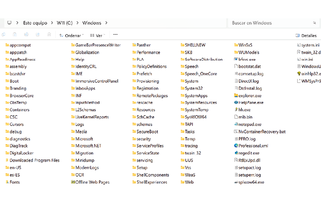

📁
Archivos y Recursos de la Actividad
Descarga los archivos originales asociados a esta actividad:
Módulo formativo: Publicación de páginas web (MF0952_2)
Actividad 1 - Ejercicio teórico-práctico
Alfonso Rubio Rioseras
Julio 2026
Descarga los archivos originales asociados a esta actividad:
Cuando estamos en el ámbito de publicación de páginas web, la seguridad se suele dividir en dos grandes ámbitos: seguridad física y seguridad lógica (o de administración). Ambas son igual de importantes, pero protegen aspectos diferentes.
Consiste en proteger el hardware donde se aloja la página web (servidores, ordenadores y equipos de red).
Con ello intentamos reducir riesgos conscientes de que la seguridad absoluta no existe, salvo la seguridad de que un día quizás lejano dejaremos de respirar para siempre.
Protege la información y los recursos digitales de la página web. Su objetivo es garantizar que solo las personas autorizadas puedan acceder o modificar el sitio.
Seguridad física: protege los equipos e instalaciones donde funciona la página web.
Seguridad lógica o de administración: protege el software, los datos, las cuentas de usuario y los permisos de acceso, evitando que personas no autorizadas puedan consultar, modificar o eliminar la información.
En una página web profesional, ambas deben trabajar conjuntamente: no sirve de mucho tener un servidor perfectamente protegido físicamente si cualquiera puede acceder al panel de administración con una contraseña débil, ni tener una excelente seguridad lógica si el servidor puede ser robado o dañado físicamente.
Para proteger la información almacenada en un servidor frente a desastres naturales o incidentes provocados por personas, es necesario combinar medidas preventivas y de recuperación. El objetivo es garantizar que los datos puedan recuperarse incluso si el servidor queda inutilizado.
Es la medida más importante. Hacer copias de seguridad de forma periódica (diarias, semanales o mensuales, según la importancia de los datos). Automatizar el proceso para evitar olvidos y comprobar periódicamente que las copias pueden restaurarse correctamente.
No es recomendable guardar las copias únicamente en el mismo servidor. Se pueden almacenar en un servidor distinto, disco duro externo, sistema de almacenamiento en red (NAS) o servicios de almacenamiento en la nube. De este modo, si el servidor principal se destruye, los datos seguirán estando disponibles.
Es una de las mejores prácticas en seguridad informática: 3 copias de los datos, 2 soportes diferentes (por ejemplo, disco duro y nube), 1 copia fuera de la ubicación principal.
Un SAI proporciona energía durante un corte eléctrico, permitiendo apagar el servidor de forma segura y evitando daños en los datos.
Control de acceso a la sala de servidores, cámaras de vigilancia, sistemas contra incendios, protección frente a inundaciones y control de temperatura y humedad.
Firewall, antivirus y antimalware, actualizaciones periódicas del sistema operativo y software, contraseñas seguras, autenticación en dos factores (2FA) y gestión adecuada de permisos de usuarios.
El cifrado protege los datos para que, aunque alguien robe los discos o acceda a las copias de seguridad, no pueda leer la información sin la clave correspondiente.
Establece cómo actuar si ocurre un incidente grave. Debe incluir procedimiento para restaurar copias de seguridad, tiempo máximo aceptable para recuperar el servicio, responsables de cada tarea y recursos necesarios para volver a poner el servidor en funcionamiento.
La mejor forma de evitar la pérdida de información es combinar copias de seguridad periódicas, almacenamiento en diferentes ubicaciones, protección física y lógica del servidor y un plan de recuperación ante desastres. Así, aunque ocurra un incendio, una inundación, un robo, un fallo del hardware o un ciberataque, será posible restaurar los datos y reanudar el servicio con rapidez.
Para evitar que cualquier usuario pueda acceder o modificar los archivos de un servidor, es necesario aplicar medidas de control de acceso y seguridad. Estas medidas garantizan que solo las personas autorizadas puedan consultar, modificar o eliminar la información.
Cada archivo y directorio debe tener permisos adecuados para controlar quién puede leer el archivo, escribir o modificar su contenido, o ejecutarlo. En servidores Linux, se utilizan permisos como 644 para archivos y 755 para directorios, evitando conceder permisos de escritura a usuarios no autorizados.
Cada persona debe disponer de una cuenta propia. Los permisos se asignan según el rol que desempeñe. Ejemplo: Administrador (acceso total), Editor (puede modificar contenidos), Usuario (solo puede consultar).
Solo usuarios autorizados deben acceder mediante contraseñas robustas, autenticación en dos factores (2FA), cambio periódico de credenciales y acceso mediante claves SSH en lugar de contraseñas cuando sea posible.
El cifrado protege los archivos (uso de HTTPS mediante certificados SSL/TLS, cifrado de contraseñas y datos sensibles) para que no se pueda leer su contenido sin la clave de descifrado.
Mantener actualizado el sistema operativo, servidor web (Apache, Nginx...), gestor de contenidos y plugins/temas para corregir vulnerabilidades.
El firewall controla qué conexiones pueden acceder al servidor. También usar antivirus, sistemas de detección de intrusos y protección contra ataques DDoS y de fuerza bruta.
Mantener registros (logs) de las acciones realizadas por los usuarios para detectar accesos sospechosos o modificaciones no autorizadas.
Una empresa aloja su página web en un servidor:
La protección de los archivos en un servidor se basa en asignar permisos adecuados, controlar la identidad de los usuarios mediante autenticación, cifrar la información, mantener el sistema actualizado, filtrar los accesos con un firewall y realizar copias de seguridad periódicas. La combinación de estas medidas garantiza la confidencialidad, integridad y disponibilidad de la información almacenada.

Los permisos especiales en Linux son tres mecanismos que complementan los permisos tradicionales de lectura (r), escritura (w) y ejecución (x), proporcionando un mayor control sobre el acceso y la ejecución de archivos y directorios.
Permite que un archivo ejecutable se ejecute con los permisos de su propietario en lugar de los del usuario que lo ejecuta. Se utiliza, por ejemplo, en el comando passwd, que necesita modificar archivos del sistema propiedad del usuario root.
En archivos hace que el programa se ejecute con los permisos del grupo propietario y, en directorios, provoca que todos los archivos y subdirectorios creados dentro de ellos hereden automáticamente el mismo grupo, lo que facilita el trabajo colaborativo entre varios usuarios.
Se aplica principalmente a directorios compartidos y permite que solo el propietario de un archivo, el propietario del directorio o el administrador del sistema (root) puedan eliminar o renombrar los archivos contenidos en él, evitando que otros usuarios borren archivos ajenos.
En conjunto, estos permisos especiales aumentan la seguridad y el control de acceso en los sistemas Linux, permitiendo administrar de forma más eficiente los recursos y proteger la información almacenada.
Los permisos de acceso en Linux son un conjunto de reglas que determinan qué acciones puede realizar cada usuario sobre un archivo o directorio. Estos permisos permiten controlar quién puede leer, modificar o ejecutar un archivo, garantizando la seguridad y la integridad de la información almacenada en el sistema.
Los permisos pueden ser asignados o modificados por el propietario del archivo (owner) y por el administrador del sistema (usuario root), siendo este último quien tiene control total sobre todos los archivos y directorios del sistema.
Es el usuario dueño del archivo o directorio y normalmente dispone de los permisos más amplios.
Corresponde al grupo de usuarios al que pertenece el archivo y cuyos miembros comparten los permisos asignados a dicho grupo.
Engloba a todos los usuarios del sistema que no son ni el propietario ni pertenecen al grupo del archivo.
Gracias a esta estructura de permisos, Linux ofrece un sistema flexible y seguro para controlar el acceso a la información y proteger los recursos del sistema frente a accesos o modificaciones no autorizadas.